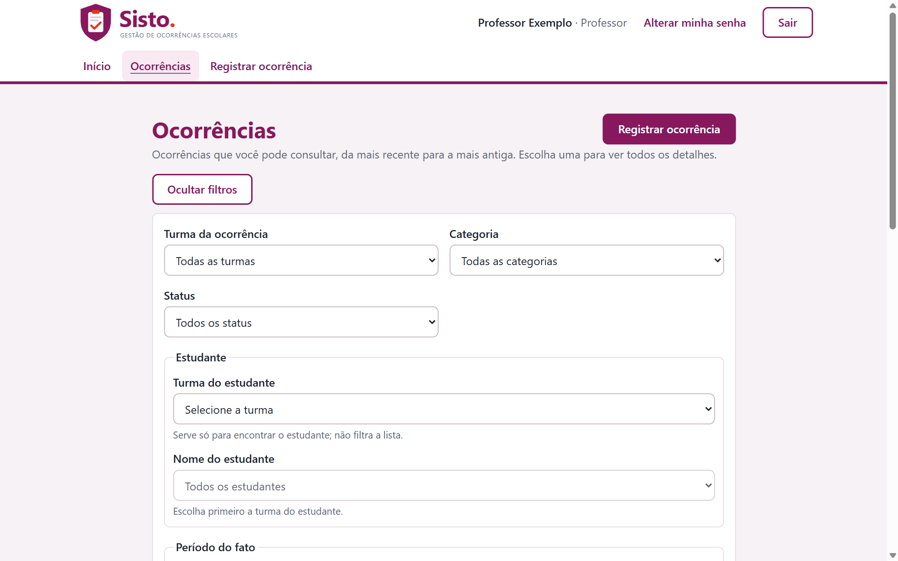
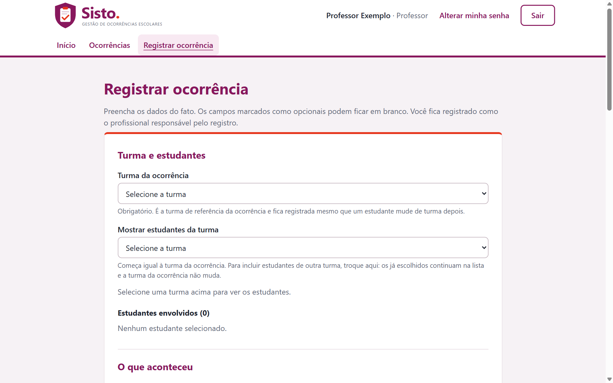
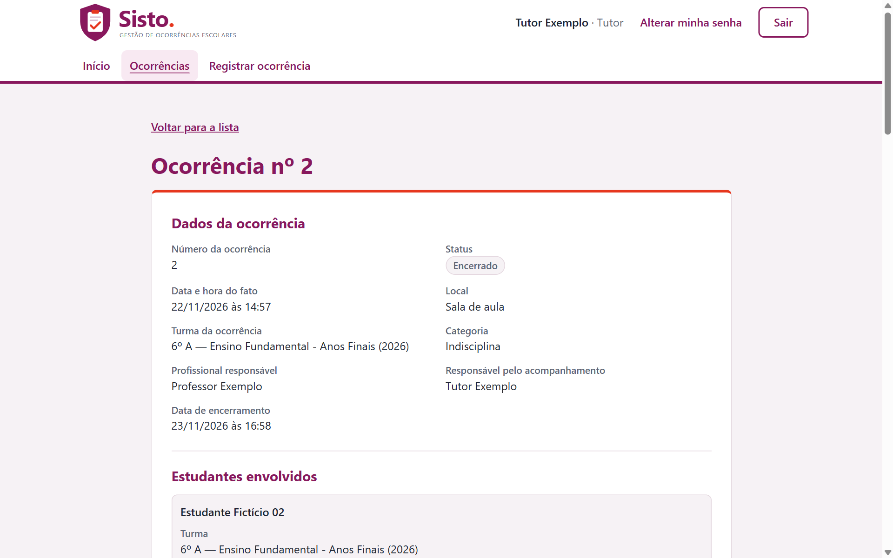
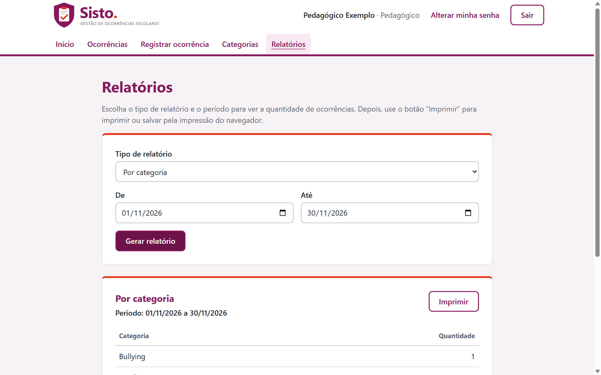
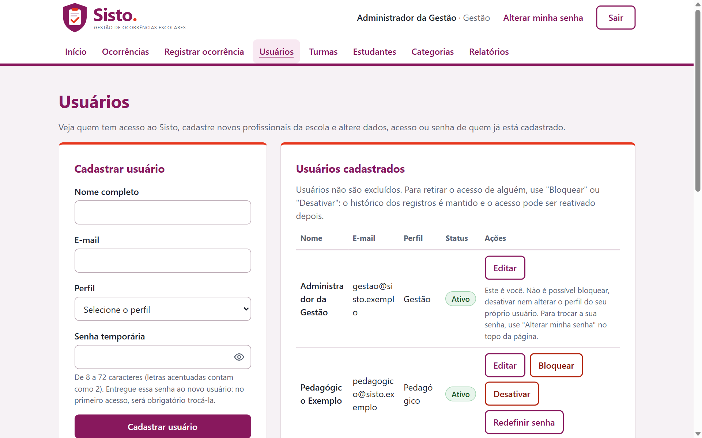

O caminho de uma ocorrência, do registro ao encerramento
Tudo o que a plataforma faz e como ela protege os dados
EE José Carlos Nogueira Reverendo – Professor As imagens deste material usam somente dados de exemplo (nomes fictícios).
Sisto · Visão geral
sisto.onrender.com
O que é o Sisto
O Sisto é o sistema da escola para registrar, encaminhar, acompanhar e consultar as ocorrências escolares: indisciplina, conflitos, bullying, situações de sofrimento emocional e outras.
Como era antes
As ocorrências eram anotadas em formulários de papel. Depois, a equipe pedagógica organizava tudo e passava as informações para a Plataforma Conviva. Isso gastava papel e tempo, e os registros podiam se perder ou ser difíceis de encontrar depois.
O que muda com o Sisto
A ocorrência é registrada no celular ou no computador, na hora.
Ela já sai encaminhada para quem vai cuidar do caso.
Tudo o que acontece depois fica no histórico: quem fez, o quê e quando.
Fica fácil procurar registros antigos e ver relatórios por período, turma e categoria.

A lista de ocorrências no computador.
EE José Carlos Nogueira Reverendo – ProfessorPágina 2 de 13
Sisto · Visão geral
sisto.onrender.com
Como acessar
Onde abrir
No celular, no tablet ou no computador, abra o navegador (Chrome, por exemplo) e digite: sisto.onrender.com
Não precisa instalar nenhum aplicativo.
Quem pode entrar
Só quem foi cadastrado pela Gestão da escola. Cada pessoa entra com o próprio e-mail e a própria senha, e vê apenas o que é da sua função.
Primeiro acesso
A Gestão entrega uma senha temporária. No primeiro acesso, o Sisto pede para criar uma senha nova, só sua, com pelo menos 8 caracteres. Assim, nem a Gestão fica sabendo a sua senha.
Durante o uso
Por segurança, a entrada vale por até 8 horas. Depois disso, é preciso entrar de novo.
Ao terminar, toque em Sair, principalmente em aparelhos compartilhados.
Fora do horário da escola (antes das 7h, depois das 20h e nos fins de semana), a primeira abertura pode demorar cerca de 1 minuto.
EE José Carlos Nogueira Reverendo – ProfessorPágina 3 de 13
Sisto · Visão geral
sisto.onrender.com
Quem usa o Sisto
Cada pessoa tem um perfil, definido pela Gestão no cadastro. O perfil decide o que a pessoa vê e o que pode fazer.
Professor
Registra as ocorrências que observa em sala de aula ou na escola e consulta as que registrou.
Técnico-administrativo
Igual ao Professor: registra ocorrências e consulta as que registrou.
Tutor
Além de registrar, acompanha as ocorrências dos estudantes sob sua tutoria, as que recebe e as que acompanha como responsável. Registra comunicações com a família e, quando é o responsável pelo acompanhamento, registra providências e encerra a ocorrência.
Equipe Pedagógica (na tela, perfil "Pedagógico")
Vê todas as ocorrências da escola, encaminha e define quem acompanha cada caso, registra comunicações e providências, encerra ocorrências, gera relatórios e cuida das categorias.
Gestão
Faz tudo o que a Equipe Pedagógica faz e, além disso, cadastra usuários, turmas e estudantes, liga cada estudante ao seu tutor, redefine senhas e bloqueia ou desativa o acesso de quem sai da escola.
EE José Carlos Nogueira Reverendo – ProfessorPágina 4 de 13
Sisto · Visão geral
sisto.onrender.com
Quem pode fazer o quê
O que fazer
Professor
Técnico-adm.
Tutor
Equipe Pedagógica
Gestão
Registrar ocorrência
✔
✔
✔
✔
✔
Ver as ocorrências que registrou
✔
✔
✔
✔
✔
Ver as ocorrências dos seus tutorados
—
—
✔
✔
✔
Ver as ocorrências encaminhadas a você ou que você acompanha
—
—
✔
✔
✔
Ver todas as ocorrências da escola
—
—
—
✔
✔
Encaminhar ocorrência e definir quem acompanha
—
—
—
✔
✔
Registrar comunicação
—
—
✔nas que vê
✔
✔
Registrar providência e encerrar
—
—
✔se for o responsável
✔
✔
Ver relatórios
—
—
—
✔
✔
Cadastrar e editar categorias
—
—
—
✔
✔
Cadastrar usuários, turmas e estudantes
—
—
—
—
✔
Redefinir a senha de outra pessoa
—
—
—
—
✔
Trocar a própria senha
✔
✔
✔
✔
✔
✔ pode fazer · — não pode fazer.
Professor e Técnico-administrativo não recebem encaminhamentos: a ocorrência é sempre encaminhada a um tutor, à Equipe Pedagógica ou à Gestão.
Se a escola precisar de outra divisão, fale com a Gestão.
EE José Carlos Nogueira Reverendo – ProfessorPágina 5 de 13
Sisto · Visão geral
sisto.onrender.com
O caminho de uma ocorrência
Toda ocorrência passa por três situações (status), sempre nesta ordem:
Aberto
Qualquer perfil registra a ocorrência e escolhe para quem ela vai: um tutor, a Equipe Pedagógica ou a Gestão.
→
Em acompanhamento
A Equipe Pedagógica ou a Gestão encaminha e define o responsável pelo acompanhamento. Nessa fase, a escola registra os contatos com a família e as providências tomadas.
→
Encerrado
O responsável, a Equipe Pedagógica ou a Gestão encerra o caso. A ocorrência fica guardada para consulta.
Regras do caminho
Uma ocorrência só é registrada se for encaminhada para alguém.
O status não volta atrás e não pula etapas. Uma ocorrência encerrada não é reaberta.
Para encerrar, é preciso ter registrado pelo menos uma providência.
Uma ocorrência registrada não pode ser editada nem apagada. Tudo o que acontece depois é acrescentado a ela.
Cada passo fica no histórico, com quem fez e quando.
EE José Carlos Nogueira Reverendo – ProfessorPágina 6 de 13
Sisto · Visão geral
sisto.onrender.com
Registrar uma ocorrência
Todos os perfis registram ocorrências. Quem registra fica gravado como o profissional responsável pelo registro.
O que se informa
Turma e estudante(s) envolvido(s): pode ser mais de um, até de turmas diferentes.
Categoria e descrição do fato.
Data, hora e local.
Opcionais: demais envolvidos, testemunhas, providências imediatas e observações.
Para quem a ocorrência vai.
Cuidados
A data e a hora do fato não podem estar no futuro.
Escreva de forma objetiva, contando o que aconteceu, sem rótulos ou palavras que ofendam o estudante.
Confira tudo antes de enviar: depois de registrada, a ocorrência não pode ser editada.

A tela de registro no computador.
EE José Carlos Nogueira Reverendo – ProfessorPágina 7 de 13
Sisto · Visão geral
sisto.onrender.com
Acompanhar uma ocorrência
Encaminhar
A Equipe Pedagógica e a Gestão encaminham a ocorrência para um tutor, para a Equipe Pedagógica ou para a Gestão, e escolhem o responsável pelo acompanhamento. A ocorrência passa para "Em acompanhamento". Enquanto não estiver encerrada, ela pode ser encaminhada de novo, e o responsável pode ser trocado.
Comunicação
Registra um contato que a escola fez fora do sistema, por exemplo, um telefonema para a família ou um contato com a rede de proteção. O Sisto não envia mensagens: ele guarda quem foi avisado, por qual meio e quando.
Providência e encerramento
A providência é o que a escola fez para resolver o caso. Com pelo menos uma providência registrada, o responsável, a Equipe Pedagógica ou a Gestão podem encerrar a ocorrência.

O detalhe de uma ocorrência no computador.
EE José Carlos Nogueira Reverendo – ProfessorPágina 8 de 13
Sisto · Visão geral
sisto.onrender.com
Consultar e ver o histórico
Em Ocorrências, cada pessoa vê a lista das ocorrências que o seu perfil permite, da mais recente para a mais antiga, 20 por página.
Filtros
Para encontrar um registro, é possível filtrar por turma, categoria, status, estudante e período. A Gestão também filtra pelo profissional que registrou.
Detalhe e histórico
Ao abrir uma ocorrência, aparecem todos os dados do registro, os encaminhamentos, as comunicações, as providências e o histórico: a lista de tudo o que foi feito, com quem fez e quando.
A lista com os filtros, no computador.
EE José Carlos Nogueira Reverendo – ProfessorPágina 9 de 13
Sisto · Visão geral
sisto.onrender.com
Relatórios e categorias
Relatórios
A Equipe Pedagógica e a Gestão veem a quantidade de ocorrências de um período, no total ou separada por turma ou por categoria. O relatório aparece na tela e pode ser impresso pelo botão Imprimir. Na janela de impressão do navegador, também dá para escolher "Salvar como PDF".
Categorias
As categorias são os tipos de ocorrência (por exemplo, Indisciplina, Conflitos, Bullying). A Equipe Pedagógica e a Gestão podem cadastrar categorias novas e corrigir os nomes. Categorias não são apagadas, para não perder o que já foi registrado.

Um relatório no computador.
EE José Carlos Nogueira Reverendo – ProfessorPágina 10 de 13
Sisto · Visão geral
sisto.onrender.com
Cadastros da Gestão
Usuários
Cadastrar as pessoas da escola, com nome, e-mail, perfil e senha temporária.
Redefinir a senha de quem esqueceu.
Bloquear ou desativar o acesso de quem saiu da escola, e reativar quando precisar. Ninguém é apagado: os registros da pessoa continuam guardados.
O Sisto mantém sempre pelo menos duas pessoas da Gestão ativas, para uma poder ajudar a outra: ele não deixa bloquear, desativar ou mudar o perfil de alguém da Gestão se sobrarem menos de duas.
Turmas
Nome, etapa e ano letivo. Cada ano letivo tem as suas turmas.
Estudantes
Nome, turma, código escolar (opcional) e professor tutor (pode ser ligado depois).

A tela de usuários no computador.
EE José Carlos Nogueira Reverendo – ProfessorPágina 11 de 13
Sisto · Visão geral
sisto.onrender.com
Segurança e proteção dos dados
As ocorrências têm informações de estudantes menores de idade. Por isso, o Sisto segue a Lei Geral de Proteção de Dados (LGPD):
Cada um vê só o necessário
Professor e Técnico-administrativo veem as ocorrências que registraram; o Tutor, também as dos seus tutorados, as que recebe e as que acompanha como responsável; só a Equipe Pedagógica e a Gestão veem todas.
Senhas protegidas
A senha é pessoal e fica guardada de forma embaralhada: ninguém consegue lê-la, nem a Gestão. Depois de 5 senhas erradas, o Sisto pede para esperar alguns minutos (até 15) antes de tentar de novo. A conta não fica bloqueada.
Tudo fica registrado
O Sisto guarda quem fez cada registro ou alteração e quando. Uma ocorrência não é editada nem apagada.
Acesso cortado na hora
Quando a Gestão bloqueia ou desativa uma pessoa, ela perde o acesso imediatamente, mesmo que esteja com o Sisto aberto.
A sua parte
Não compartilhe a sua senha, não mostre a tela a outras pessoas e saia do Sisto ao terminar.
EE José Carlos Nogueira Reverendo – ProfessorPágina 12 de 13
Sisto · Visão geral
sisto.onrender.com
O que o Sisto não faz
Para evitar dúvidas, esta versão do Sisto não:
tem aplicativo para instalar: ele funciona pelo navegador;
envia mensagens, SMS ou e-mails para as famílias (a comunicação é feita pela escola e só registrada no Sisto);
envia dados para a Plataforma Conviva ou para outros sistemas da Secretaria da Educação;
importa turmas e estudantes de outros sistemas (o cadastro é feito pela Gestão);
exporta relatórios em PDF ou planilha (eles podem ser impressos pelo navegador);
tem painel de gráficos, assinatura eletrônica, módulo de mediação de conflitos ou banco de orientações e procedimentos da escola;
tem "esqueci minha senha" por e-mail: quem esqueceu pede à Gestão para redefinir;
permite editar ou apagar uma ocorrência registrada.
Onde buscar ajuda
Guias de uso, passo a passo
Há um guia com imagens para cada perfil: Professor e Técnico-administrativo, Tutor, Equipe Pedagógica e Gestão.
Ainda com dúvida?
Procure a Gestão ou a Equipe Pedagógica da escola.
EE José Carlos Nogueira Reverendo – ProfessorPágina 13 de 13